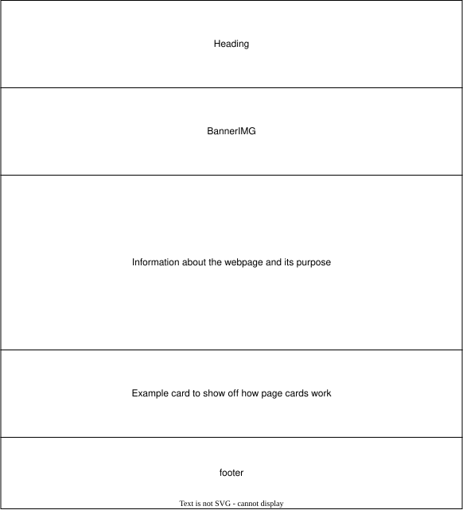
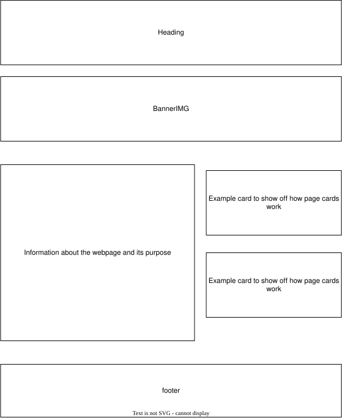
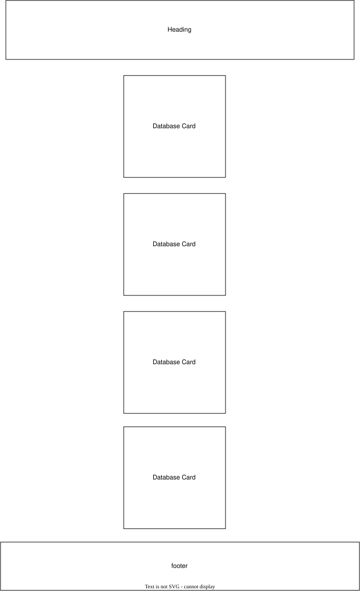
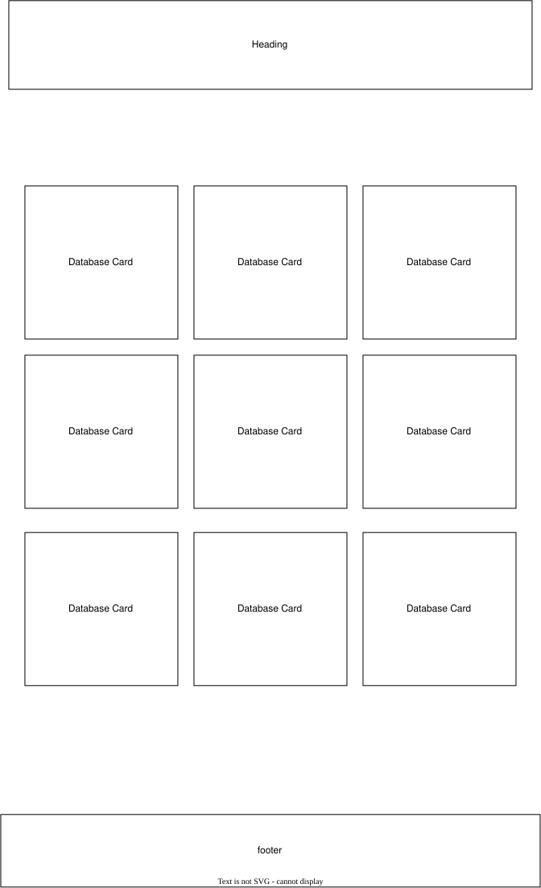
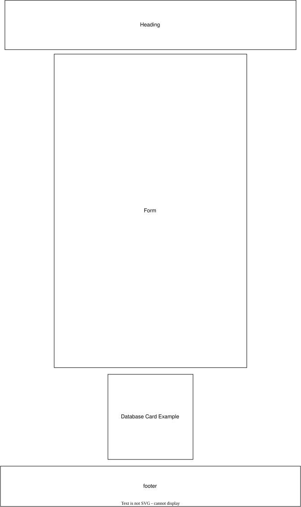
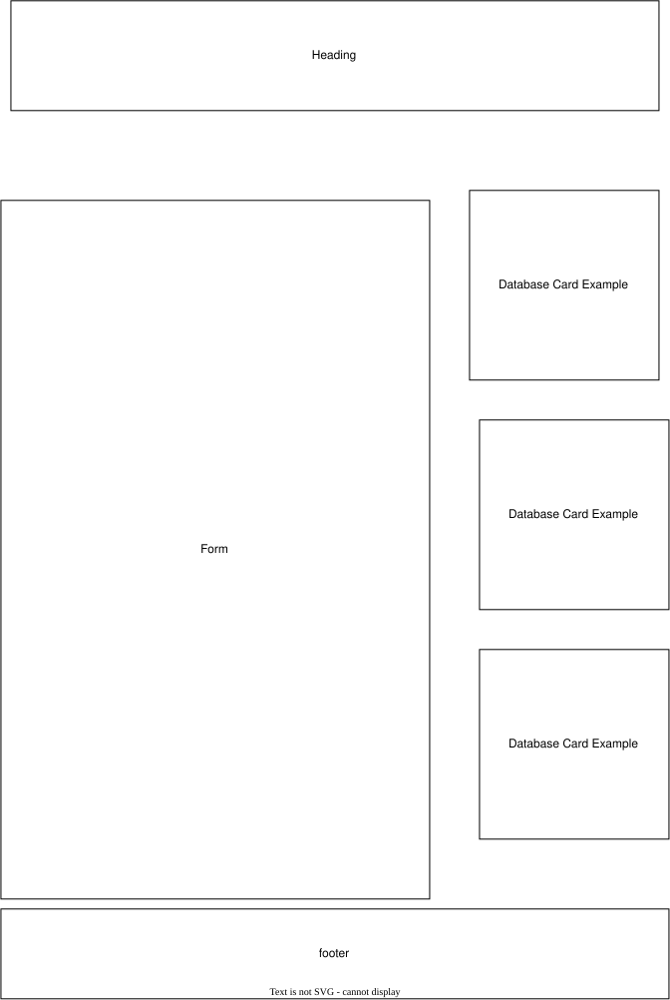

Star Wars Lego Set Database. This name is chosen to accurately reflect its purpose in being a catalogue (not one to buy from) for the Star Wars sets Lego has released.
This site provides a single website a user can use to get a comprehensive overview of all Star Wars Lego sets released. It will contain a submission form for sets missing and have a homepage and a catalogue/database page.
This page exists as a conservation effort because stores eventually stop marketing and selling lego sets. If you know there is a set that is missing, there will be a Set Missing page to submit the set for review, where it will be added if it is missing from the database.
For my color scheme, I want the header to be a darker blue with white text on it, and the footer will be the same with a hexcode of #123B66. For headings on the screen, I will give them a light blue background with black text, also any card style thing on the page will follow that pattern as well, with a hexcode of #7db9fa. I will also give highlighted buttons/similar things have a color change to an appealing yellow, the hex code being #E0A82E.
For my typography I will be using Roboto for the font style of the entire document.





